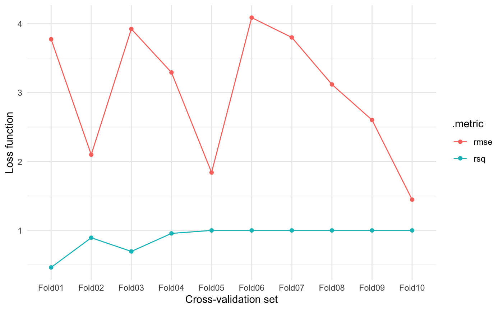

vignettes/c03_fitting-model-resampling.Rmd
c03_fitting-model-resampling.RmdThis vignette aims to exemplify how you can use resampling within a tidyflow.
A tidyflow is a bundle of steps that allow you to bundle together your data, splitting, resampling, reprocessing, modeling, and grid search. For resampling your data, the tidymodels ecosystem contains the rsample package. rsample allows you to apply many different resampling methods to your data within a tidy framework.
However, you might ask, what is resampling? Resampling is a technique widely used in statistics to create random copies of your data. For example, cross-validation randomly picks a percentage of your sample and randomly assigns them into the ‘training’ and ‘testing’ set, used for evaluating the error of your modeling. Cross-validation repeats this same iteration but it makes sure that none of the observations in the testing set are included in the next testing set. This approach allows you to test the accuracy of your model while reducing the overfitting penalty of running the same model on the same data repeatedly.
Since we’re talking about cross-validation, let’s perform our example with the function vfold_cv, responsible for cross-validation in rsample. Let’s try it with the mtcars dataset:
library(tidymodels) #> ── Attaching packages ────────────────────────────────────── tidymodels 0.1.1 ── #> ✔ broom 0.7.0 ✔ recipes 0.1.13 #> ✔ dials 0.0.8 ✔ rsample 0.0.7 #> ✔ dplyr 1.0.1 ✔ tibble 3.0.3 #> ✔ ggplot2 3.3.2 ✔ tidyr 1.1.1 #> ✔ infer 0.5.3 ✔ tune 0.1.1 #> ✔ modeldata 0.0.2 ✔ workflows 0.1.3 #> ✔ parsnip 0.1.3 ✔ yardstick 0.0.7 #> ✔ purrr 0.3.4 #> ── Conflicts ───────────────────────────────────────── tidymodels_conflicts() ── #> ✖ purrr::discard() masks scales::discard() #> ✖ dplyr::filter() masks stats::filter() #> ✖ dplyr::lag() masks stats::lag() #> ✖ recipes::step() masks stats::step() library(tidyflow) #> #> Attaching package: 'tidyflow' #> The following object is masked from 'package:tune': #> #> parameters #> The following object is masked from 'package:dials': #> #> parameters mtcars %>% vfold_cv() #> # 10-fold cross-validation #> # A tibble: 10 x 2 #> splits id #> <list> <chr> #> 1 <split [28/4]> Fold01 #> 2 <split [28/4]> Fold02 #> 3 <split [29/3]> Fold03 #> 4 <split [29/3]> Fold04 #> 5 <split [29/3]> Fold05 #> 6 <split [29/3]> Fold06 #> 7 <split [29/3]> Fold07 #> 8 <split [29/3]> Fold08 #> 9 <split [29/3]> Fold09 #> 10 <split [29/3]> Fold10
The result is the same dataset repeated 10 times but in each iteration, the testing and training set contain different observations. rsample has several other functions for doing resampling and continues to add new methods. For example, it supports bootstrapping, leave-one-out cross-validation and monte-carlo cross-validation.
How do we incorporate this in our tidyflow? We use plug_resample.
mtcars %>% tidyflow(seed = 52151) %>% plug_resample(vfold_cv) #> ══ Tidyflow ════════════════════════════════════════════════════════════════════ #> Data: 32 rows x 11 columns #> Split: None #> Recipe/Formula: None #> Resample: vfold_cv w/ default args #> Grid: None #> Model: None
plug_resample makes sure to add the cross-validation step to the tidyflow. seed makes sure that the random sample of observations carried out in vfold_cv is always the same. However, we usually don’t do resampling this way, right? We separate the data into training and testing and apply the cross-validation to the training data. Well, in tidyflow its that easy:
tflow <- mtcars %>% tidyflow(seed = 52151) %>% plug_split(initial_split) %>% # Add train/testing split plug_resample(vfold_cv) %>% # Add cross-validation step plug_formula(mpg ~ .) %>% # Add formula plug_model(linear_reg() %>% set_engine('lm')) tflow #> ══ Tidyflow ════════════════════════════════════════════════════════════════════ #> Data: 32 rows x 11 columns #> Split: initial_split w/ default args #> Formula: mpg ~ . #> Resample: vfold_cv w/ default args #> Grid: None #> Model: #> Linear Regression Model Specification (regression) #> #> Computational engine: lm
This specification is complete and can be executed. We are using mtcars, splitting the data into training/testing, applying a cross-validation resampling to the training data and running a linear_reg on the model mpg ~ . (. means all variables).
Since we specified a cross-validation resampling, the result of this tidyflow will not be a final model. Instead, it will be \(10\) models, each model fitted on the resampled data. Let’s fit the model and look at these results:
resample_model <- tflow %>% fit() resample_model %>% pull_tflow_fit_tuning() #> # Resampling results #> # 10-fold cross-validation #> # A tibble: 10 x 4 #> splits id .metrics .notes #> <list> <chr> <list> <list> #> 1 <split [21/3]> Fold01 <tibble [2 × 3]> <tibble [0 × 1]> #> 2 <split [21/3]> Fold02 <tibble [2 × 3]> <tibble [0 × 1]> #> 3 <split [21/3]> Fold03 <tibble [2 × 3]> <tibble [0 × 1]> #> 4 <split [21/3]> Fold04 <tibble [2 × 3]> <tibble [0 × 1]> #> 5 <split [22/2]> Fold05 <tibble [2 × 3]> <tibble [0 × 1]> #> 6 <split [22/2]> Fold06 <tibble [2 × 3]> <tibble [0 × 1]> #> 7 <split [22/2]> Fold07 <tibble [2 × 3]> <tibble [0 × 1]> #> 8 <split [22/2]> Fold08 <tibble [2 × 3]> <tibble [0 × 1]> #> 9 <split [22/2]> Fold09 <tibble [2 × 3]> <tibble [0 × 1]> #> 10 <split [22/2]> Fold10 <tibble [2 × 3]> <tibble [0 × 1]>
The result is a resampling data frame which contains the metrics associated with each of our models. For example, we could look at the summary of these metrics:
resample_model %>% pull_tflow_fit_tuning() %>% collect_metrics() #> # A tibble: 2 x 5 #> .metric .estimator mean n std_err #> <chr> <chr> <dbl> <int> <dbl> #> 1 rmse standard 3.00 10 0.300 #> 2 rsq standard 0.901 10 0.0573
Or we could look at these metric values across all cross-validated resamples:
resample_model %>% pull_tflow_fit_tuning() %>% unnest(.metrics) %>% ggplot(aes(id, .estimate, color = .metric)) + geom_point() + geom_line(aes(group = .metric)) + labs(x = "Cross-validation set", y = "Loss function") + theme_minimal()

Since there are no differences in terms of the model between these different cross-validated models, we can’t really obtain a ‘final model’ out of this. You can use resampling to estimate the variance of your models. However, the superb value of resampling techniques comes in when combined with a grid search to find the most optimal combination of tuning parameters. You can read more about this in the grid search vignette.
The resample package and tidymodels are very powerful tools for doing machine learning. In this vignette, I tried to extend their work by providing a unified interface for working with resample that uses the resample framework bundled together with all the other common machine learning steps.
Want to see tidyflow and resample in action? The tidymodels team has a vignette showcasing how to use resample and tidymodels here. I’ve adapted their code to fully run within a tidyflow workflow. Here’s the replication code:
library(tidymodels) # for the rsample package, along with the rest of tidymodels library(tidyflow) library(modeldata) # for the cells data data(cells, package = "modeldata") rf_mod <- rand_forest(trees = 1000) %>% set_engine("ranger") %>% set_mode("classification") rf_fit <- cells %>% tidyflow(seed = 123) %>% plug_split(initial_split, strata = "class") %>% plug_formula(class ~ .) %>% plug_model(rf_mod) %>% fit() rf_fit_pred <- bind_cols( predict_training(rf_fit, type = "prob"), # probabilities predict(rf_fit, pull_tflow_training(rf_fit)) # class predictions ) rf_fit_pred %>% roc_auc(truth = class, .pred_PS) rf_fit_pred %>% accuracy(truth = class, .pred_class) rf_fit_pred <- bind_cols( predict_testing(rf_fit, type = "prob"), # probabilities predict(rf_fit, pull_tflow_testing(rf_fit)) # class predictions ) rf_fit_pred %>% roc_auc(truth = class, .pred_PS) rf_fit_pred %>% accuracy(truth = class, .pred_class) rf_fit_rs <- rf_fit %>% plug_resample(vfold_cv, v = 10) %>% fit() rf_fit_rs